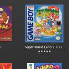
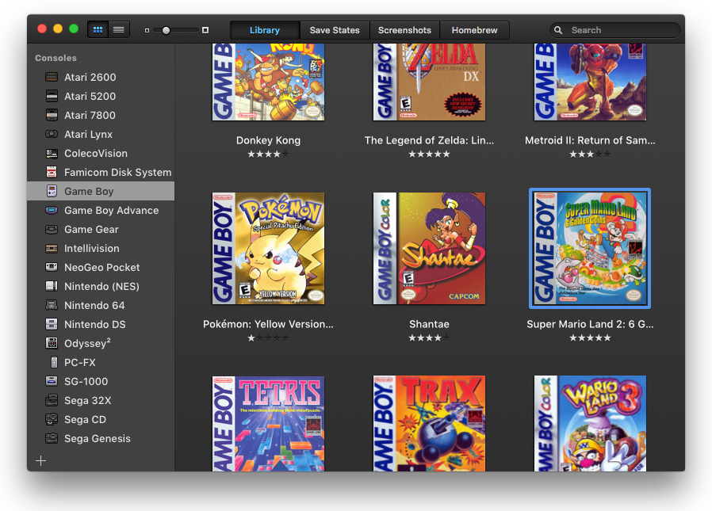
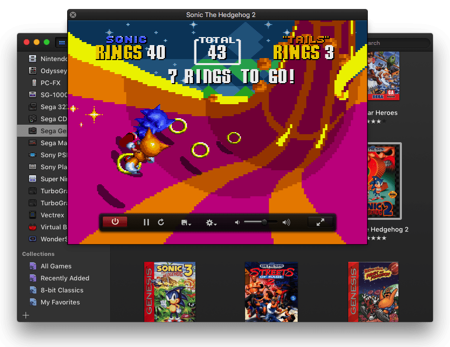
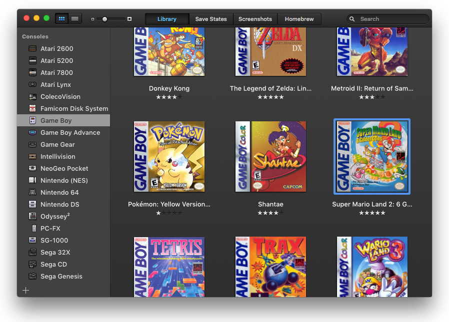
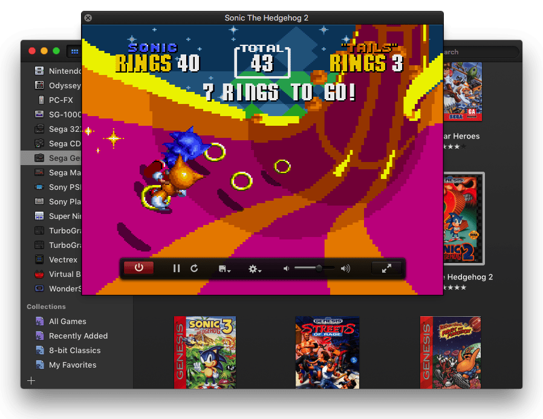

OpenEmu is about to change the world of video game emulation. One console at a time...
For the first time, the 'It just works' philosophy now extends to open source video game emulation on the Mac. With OpenEmu, it is extremely easy to add, browse, organize and with a compatible gamepad, play those favorite games (ROMs) you already own.

- 
 





Take Control
Up, Up, Down, Down, Left, Right,
Left, Right, B, A, Start
Why restrict yourself to just the keyboard? Although it is not a requirement, OpenEmu is best used with a peripheral gamepad or controller to interact with your games.
Via the Controller Preferences, simply auto- magically assign buttons with any generic HID compliant USB or Bluetooth game controller.
Plug in your gamepad, select it from the list… and press start to begin your adventures!

Time To Get Organized
Everything in its place. Automatically
We combine some of the best emulation projects together into one beautiful unified application that simply organizes your personal games library. Watch as you drop in backups of your games (ROMs) & they are gracefully added to their appropriate library along with original box art!
1

Drag n’ Drop a backup game (ROM) from your Mac desktop.
2

OpenEmu ‘scans’ your game and begins the organisation process.
3

Your game is now neatly organised and you are ready to start playing!
Features Overview
An exciting world of video games is within your grasp.
Library
One of the standout features of OpenEmu is how it organizes all your games into one unique, unified games library. Watch as backups of the games (ROMs) you already own are gracefully added to their appropriate library and box art is magically added. You can even create your own ‘collections’ mix and matched from different consoles.
Controls & Controllers
Any generic HID compliant USB or Bluetooth game controller should work with OpenEmu out of the box. OpenEmu now automatically maps controls for the following recognized devices in our database:
PlayStation Dualshock 3 and Dualshock 4
Wiimote and Wii U Pro
Xbox 360 & 3rd party (driver required)
SteelSeries Nimbus
SteelSeries Stratus XL
Horipad Ultimate
Sega Saturn USB
PS3 Neo Geo Pad USB
Logitech series (Dual Action, Rumblepad 2, Gamepad F310/F510/F710)
Gravis GamePad Pro
Retrode (SNES)
N64 Adaptoid
Cores & Systems
OpenEmu is modular, and thanks to the work of other great open source projects, it can emulate a wide variety of video game systems (we call them 'cores'). OpenEmu emulates the following systems:
| System | Cores |
|---|---|
| Atari 2600 | Stella |
| Atari 5200 | Atari800 |
| Atari 7800 | ProSystem |
| Atari Lynx | Mednafen |
| ColecoVision | CrabEmu |
| Famicom Disk System | Nestopia |
| Game Boy / Game Boy Color | Gambatte |
| Game Boy Advance | mGBA, VBA-M |
| Game Gear | CrabEmu, TwoMbit |
| Intellivision | Bliss |
| NeoGeo Pocket | NeoPop |
| Nintendo (NES) / Famicom | FCEUX, Nestopia |
| Nintendo DS | DeSmuME |
| Nintendo 64 | Mupen64Plus |
| Odyssey²/Videopac+ | O2EM |
| PC-FX | Mednafen |
| SG-1000 | CrabEmu |
| Sega 32X | picodrive |
| Sega CD / Mega CD | Genesis Plus GX |
| Sega Genesis / Mega Drive | Genesis Plus GX |
| Sega Master System | CrabEmu, TwoMbit |
| Sony PlayStation | Mednafen |
| Sony PSP | PPSSPP |
| Super Nintendo (SNES) | Higan, Snes9x |
| TurboGrafx-16/PC Engine/SuperGrafx | Mednafen |
| TurboGrafx-CD/PC Engine CD | Mednafen |
| Virtual Boy | Mednafen |
| Vectrex | VecXGL |
| WonderSwan | Mednafen |
- Sitemap
- Download
- Social